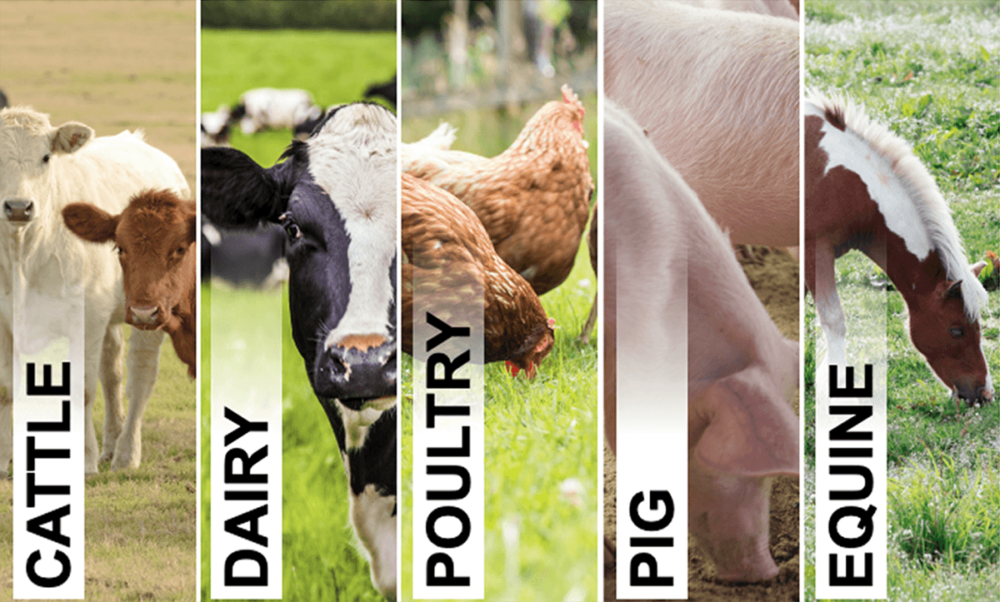

Grow Better with Knowledge
Access farming information in multiple languages to improve your agricultural practices
🌿 Tip of the Day
Loading tip...
Task Scheduler
Manage your farming tasks and get reminders
May 2024
Your Farm Tasks
- No tasks scheduled yet. Click on a date to add a task.
Image Analysis
Upload an image for plant disease detection or soil type analysis
Analysis Results:
Soil Type
Analyzing soil...
Plant Disease
Analyzing disease...
Live Detection
Use your webcam to instantly identify soil types and plant diseases
Soil Type
Waiting for detection...
Plant Disease
Waiting for detection...
Popular Categories

Crops
Explore various crop cultivation techniques and best practices

Soil
Learn about soil types, testing, and improvement methods

Irrigation
Discover modern irrigation systems and water management
Livestock
Guide to livestock care, breeding, and management

Equipment
Modern farming equipment and maintenance tips

Organic Farming
Natural farming methods and sustainable practices
Why Choose Our Platform
Multilingual Support
Access information in English, Hindi, and Telugu
Sign Language
Accessibility for deaf and hard of hearing
Voice Search
Search using your voice in multiple languages
Visual Learning
Images and visual guides for better understanding
About Us
FarmKnowledge is a platform dedicated to providing accessible farming information to everyone, regardless of language barriers or disabilities. Our mission is to empower farmers with knowledge to improve their practices and yields.
We believe that everyone should have access to agricultural information, which is why we've made our platform multilingual and accessible through sign language support.
Contact Us
info@farmknowledge.com
+1 234 567 8900
123 Farm Road, Agriculture City